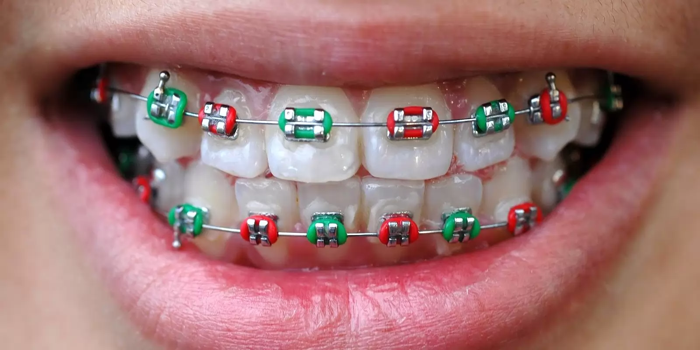
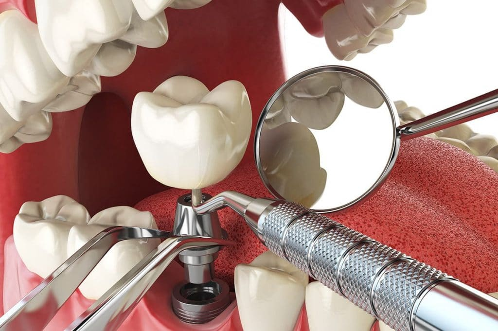
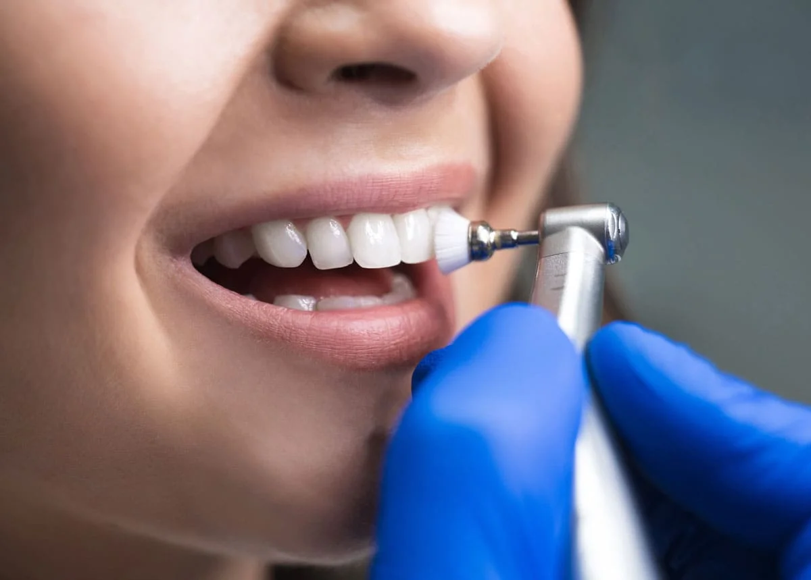

Ortodonti
15 Nisan 2025
Diş Teli Hakkında Bilmeniz Gerekenler
Diş teli tedavisi ve süreci hakkında merak edilenler.
Devamını Oku →
Çocuk Diş Sağlığı
10 Nisan 2025
Çocuklarda Diş Fırçalama Alışkanlığı
Çocuklarınıza diş fırçalama alışkanlığını nasıl kazandırabilirsiniz?
Devamını Oku →

İmplant
5 Nisan 2025
İmplant Tedavisi Sonrası Bakım
İmplant tedavisi sonrası nelere dikkat etmelisiniz?
Devamını Oku →
Diş Hijyeni
20 Nisan 2025
Diş Taşı Temizliğinin Önemi
Profesyonel diş taşı temizliği neden önemlidir ve ne sıklıkla yapılmalıdır?
Devamını Oku →

Estetik
18 Nisan 2025
Diş Beyazlatma Yöntemleri
Evde ve klinikte diş beyazlatma yöntemleri ve farkları.
Devamını Oku →